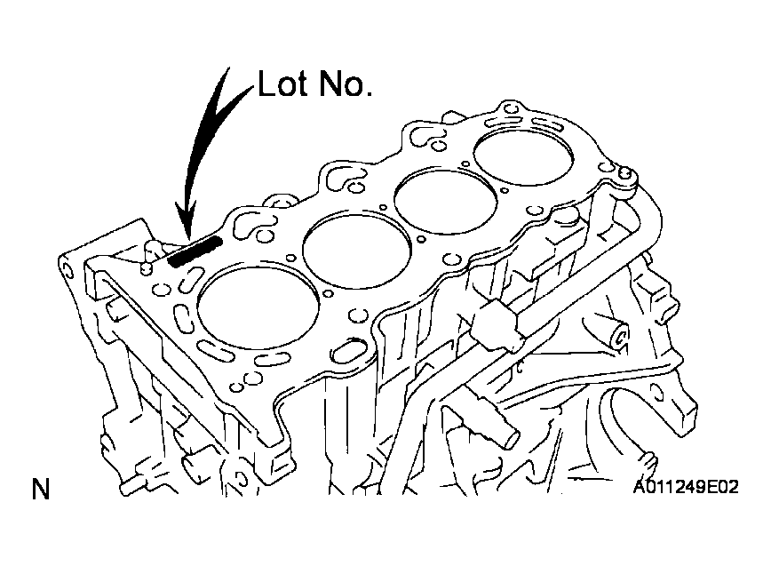
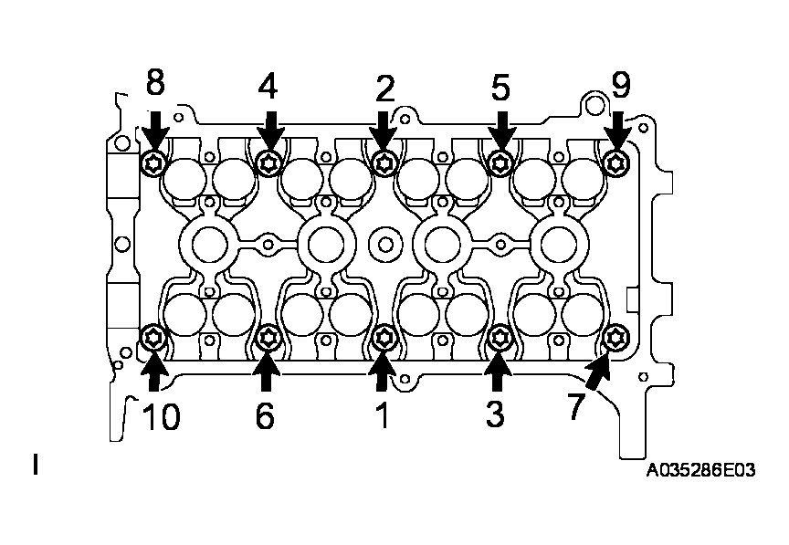
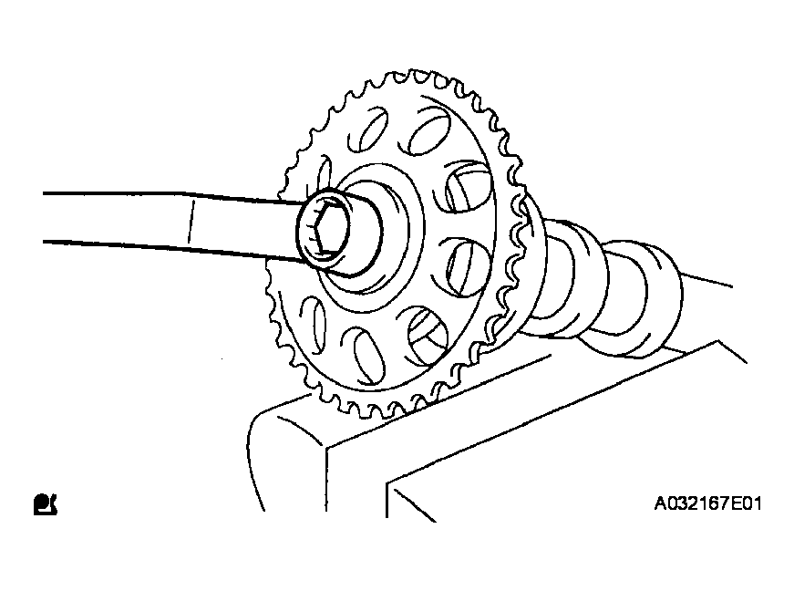
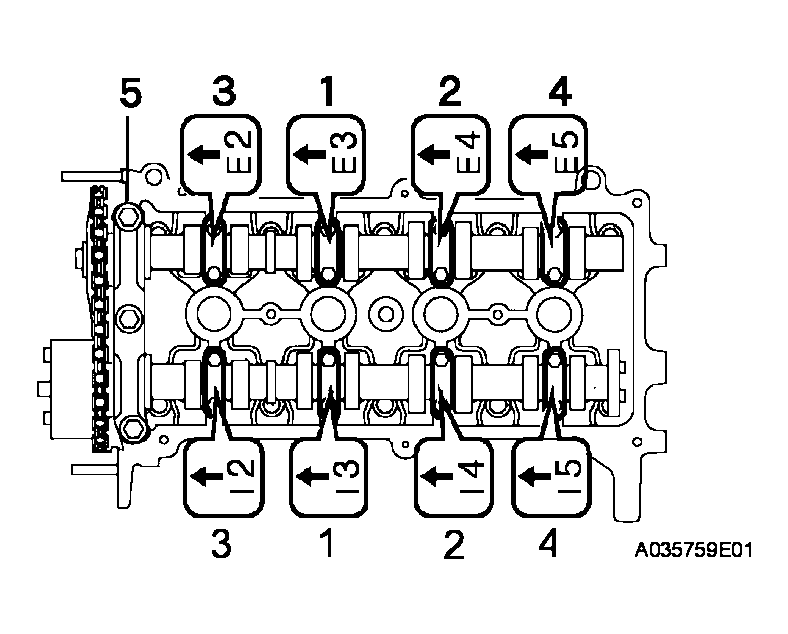
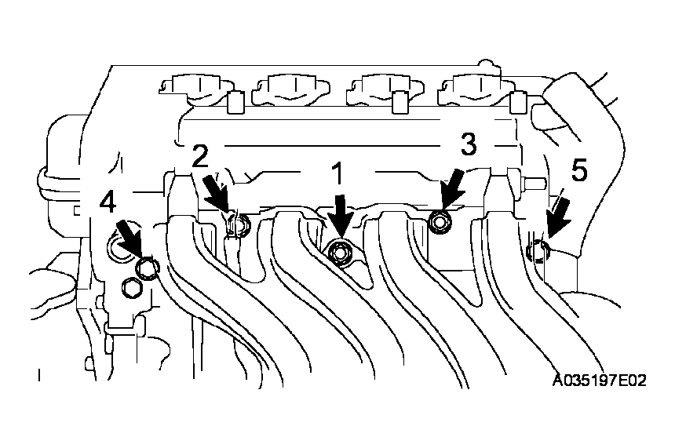

Cylinder Head, Intake Manifold, Exhaust Manifold: Installation
- INSTALL CYLINDER HEAD GASKET
- Place a new cylinder head gasket on the cylinder block with the Lot No. stamp facing upward.

Courtesy of © TOYOTA, LICENSE AGREEMENT TMS1002NOTE:- Remove any oil from the contact surface.
- Be careful of the mounting orientation.
- Place the cylinder head on the gasket gently so as not to damage the gasket at the bottom part of the head.
- Place a new cylinder head gasket on the cylinder block with the Lot No. stamp facing upward.
- INSTALL CYLINDER HEAD
HINT:
The cylinder head bolts are tightened in 2 successive steps.
- Apply seal packing as shown in the illustration.
Seal packing: Part No. 08826-00100
Standard seal diameter: 4.5 to 5.5 mm (0.177 to 0.217 in.)
NOTE:- Remove any oil from the contact surface.
- Install the cylinder head within 3 minutes of applying seal packing.
- Apply a light coat of engine oil to the threads of the cylinder head bolts.
- Using several steps, install and tighten the 10 cylinder head bolts and plate washers uniformly with an 8 mm bi-hexagon wrench in the sequence shown in the illustration.

Courtesy of © TOYOTA, LICENSE AGREEMENT TMS1002Torque: 29 N*m (300 kgf*cm, 22 ft.*lbf)
- Mark the front of the cylinder head bolt with paint.
- Retighten the cylinder head bolts by an additional 90° and then another additional 90°, as shown in the illustration.
- Check that the paint mark is now 180° opposite to the front.
- Apply seal packing as shown in the illustration.
- INSTALL CAMSHAFT TIMING GEAR
- Put the camshaft timing gear assembly and the camshaft together with the straight pin off the groove, as shown in the illustration.
- Turn the camshaft timing gear assembly clockwise while pushing it lightly towards the camshaft. Push further at the position where the pin fits into the groove.
NOTE: Be careful not to turn the camshaft timing gear to the retard angle (to the right).
- Check that there is no clearance between the gear fringe and camshaft.
- Tighten the flange bolt with the camshaft timing gear fixed.
Torque: 64 N*m (653 kgf*cm, 47 ft.*lbf)
- Check that the camshaft timing gear assembly can move to the retard angle (to the right) and is locked in the most retarded position.
- INSTALL CAMSHAFT TIMING SPROCKET
- Clamp the camshaft in a vise.
- Align the knock pin hole of the camshaft timing sprocket with the knock pin of the camshaft, and install the camshaft timing sprocket.

Courtesy of © TOYOTA, LICENSE AGREEMENT TMS1002Torque: 64 N*m (653 kgf*cm, 47 ft.*lbf)
NOTE: Be careful not to damage the camshaft.
- INSTALL CAMSHAFT
- Apply a light coat of engine oil to the camshaft journals.
- Place the camshaft on the cylinder head with the timing mark on the camshaft timing gear facing upward.
- Examine the front marks and numbers, and tighten the bolts in the sequence shown in the illustration.

Courtesy of © TOYOTA, LICENSE AGREEMENT TMS1002Torque: 13 N*m (129 kgf*cm, 9 ft.*lbf)
NOTE: Tighten each bolt uniformly, keeping the camshaft level. - Install the No. 1 bearing cap.
Torque: 23 N*m (235 kgf*cm, 17 ft.*lbf)
- INSTALL FUEL INJECTOR (See REASSEMBLY )
- INSTALL FUEL DELIVERY PIPE (See REASSEMBLY )
- INSTALL CHAIN (See INSTALLATION )
- INSTALL OIL PUMP SEAL (See REPLACEMENT )
- INSTALL TIMING CHAIN COVER (See REASSEMBLY )
- INSTALL WATER PUMP (See REASSEMBLY )
- INSTALL ENGINE MOUNTING BRACKET RH (See INSTALLATION )
- INSTALL ENGINE MOUNTING INSULATOR RH (See INSTALLATION )
- INSTALL CAMSHAFT TIMING OIL CONTROL VALVE ASSEMBLY (See INSTALLATION )
- INSTALL CRANKSHAFT POSITION SENSOR (See INSTALLATION )
- INSTALL WATER PUMP PULLEY (See REASSEMBLY )
- INSTALL CRANKSHAFT PULLEY (See INSTALLATION )
- INSTALL CYLINDER HEAD COVER (See INSTALLATION )
- INSTALL IGNITION COIL (See INSTALLATION )
- INSTALL NO. 2 CYLINDER HEAD COVER (See INSTALLATION )
- INSTALL GENERATOR (See REASSEMBLY )
- INSTALL VANE PUMP V BELT (See REMOVAL )
- INSTALL GENERATOR V BELT (See REMOVAL )
- ADJUST GENERATOR V BELT (See REMOVAL )
- ADJUST VANE PUMP V BELT (See REMOVAL )
- INSPECT DRIVE BELT DEFLECTION AND TENSION (See ON-VEHICLE INSPECTION )
- INSTALL CAMSHAFT TIMING CONTROL VALVE ASSEMBLY (See REASSEMBLY )
- CONNECT NO. 2 VENTILATION HOSE (See INSTALLATION )
- CONNECT VENTILATION HOSE (See INSTALLATION )
- INSTALL IGNITION COIL (See INSTALLATION )
- INSTALL OIL DIPSTICK GUIDE
- Apply engine oil to a new O-ring and install it to the dipstick guide.
- Install the dipstick guide with the bolt.
Torque: 9.0 N*m (92 kgf*cm, 80 in.*lbf)
- INSTALL INTAKE MANIFOLD
- Install a new gasket onto the intake manifold.
- Install the intake manifold with the 3 bolts and 2 nuts. Using several steps, uniformly tighten the bolts and nuts in the sequence shown in the illustration.

Courtesy of © TOYOTA, LICENSE AGREEMENT TMS1002Torque: 30 N*m (306 kgf*cm, 22 ft.*lbf)
- INSTALL EXHAUST MANIFOLD (See INSTALLATION )
- INSTALL MANIFOLD SUPPORT BRACKET
- Install the manifold support bracket with the 3 bolts.
Torque: 44 N*m (449 kgf*cm, 32 ft.*lbf)
- Install the manifold support bracket with the 3 bolts.
- INSTALL NO. 1 EXHAUST MANIFOLD HEAT INSULATOR
- Install the No. 1 exhaust manifold heat insulator with the 4 bolts.
Torque: 8.0 N*m (82 kgf*cm, 71 in.*lbf)
- Install the No. 1 exhaust manifold heat insulator with the 4 bolts.
- INSTALL FRONT EXHAUST PIPE
- Place a new gasket on the exhaust manifold.
- Install the 2 compression springs and 2 bolts.
Torque: 43 N*m (438 kgf*cm, 32 ft.*lbf)
- INSTALL WATER FILLER
- Install the water filler with the 2 bolts.
Torque: 7.5 N*m (76 kgf*cm, 66 in.*lbf)
- Connect the radiator reservoir tank hose.
- Connect the No. 3 radiator hose.
- Connect the radiator inlet hose.
- Install the water filler with the 2 bolts.
- INSTALL NO. 1 WATER BYPASS PIPE
- Install the water bypass pipe with the bolt.
Torque: 9.0 N*m (92 kgf*cm, 80 in.*lbf)
- Install the water bypass pipe with the bolt.
- CONNECT RADIATOR HOSE INLET
- Connect the radiator hose inlet to the union.
- CONNECT UNION TO CHECK VALVE HOSE
- Connect the union to check valve hose to the brake booster.
- CONNECT FUEL TUBE (See INSTALLATION )
- INSTALL ACCELERATOR CONTROL CABLE (See INSTALLATION )
- CONNECT ENGINE WIRE
- INSTALL AIR CLEANER (See INSTALLATION )
- INSTALL OIL PAN DRAIN PLUG
- ADD ENGINE OIL (See REPLACEMENT )
- CHECK FOR ENGINE OIL LEAKS
- ADD COOLANT (See ON-VEHICLE INSPECTION )
- CHECK FOR ENGINE COOLANT LEAKS (See ON-VEHICLE INSPECTION )
- CHECK FOR FUEL LEAKS (See ON-VEHICLE INSPECTION )
- CONNECT CABLE TO NEGATIVE BATTERY TERMINAL